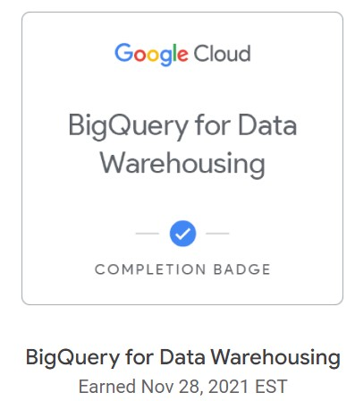
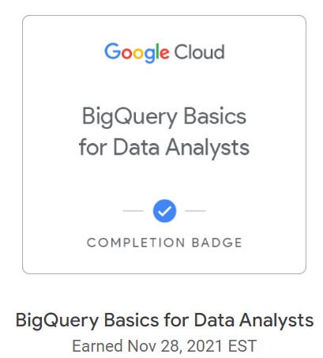
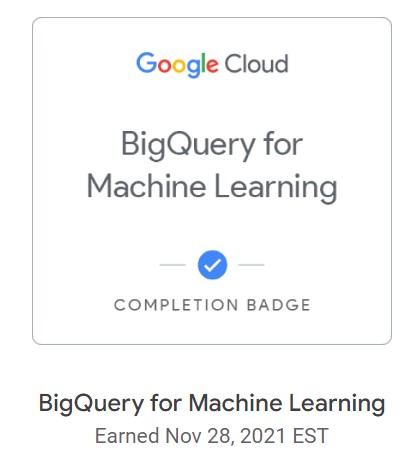

SQL

It includes simple queries, relationships, and aggregators.

It includes complex joins, unions, and sub-queries.

It covers topics like query optimization, data modeling, Indexing, window functions, and pivots in SQL.
Power BI
Certified for being able to building scalable data models, cleaning and transforming data, and enabling advanced analytic capabilities that provide meaningful business value through easy-to-comprehend data visualizations.
BigQuery & ML

Extract, transform, and load data into Google Cloud with BigQuery.

Utilize SQL on BigQuery to focus on analyzing data to find meaningful insights.

Create, train, evaluate, and predict with machine learning models using existing SQL tools and skills.